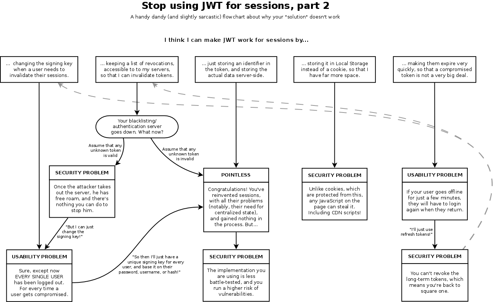

Web Security
Andreas Happe
Session Management
- Recap: Warum Sessions?
Gewünschter Session-Ablauf
- Während des Logins wird ein neues Session-Token/Cookie generiert
- Bei jedem Folge-Zugriff wird über dieses Token an den Server übertragen
- (Die Benutzeridentität wird geprüft)
- Beim Logout wird das Token im Browser gelöscht und am Server als inaktiv vermerkt
- Logout aller Sessions sollte möglich sein
Client vs. Server-Side Session
- unterschiedlichen Arten Sessions zu bilden
Client-Seitig
- Direktes Speichern der Daten im Cookie
- Integrität und Confidentiality muss durch Applikation sichergestellt werden
- Serverseitiges Invalidieren von Sessions schwer möglich
Server-Seitig
- server-seitig: Random Key (Session ID) im Cookie
- Server-Datenbank über die der Random-Key einem Benutzer zugeordnet wird
- Möglichkeit der Session-Invalidation
- Keine sensiblen Daten innerhalb der Client-Cookies
Session-Technologien
Cookie-based Sessions
- Cookie wird durch den Server gesetzt
- Cookie wird bei jedem Request automatisch durch den Browser mit übertragen
- Möglichkeit des Session-Timeouts und optionale Security-Flags
Cookie-Beispiele
Set-Cookie: sessionid1=0xbadc0ffee;
Set-Cookie: sessionid2=0xbadc0ffee;Max-Age=42;
Set-Cookie: sessionid3=0xbadc0ffee;Secure;HttpOnly;SameSite=Lax
Set-Cookie: sessionid4=0xbadc0ffee;Path=/
Set-Cookie: sessionid5=0xbadc0ffee;Domain=snikt.netClient-Side: Tokens
- Server überträgt signiertes Token an Client
- Analog zu Kerberos
- Das Token enthält Zugriffsberechtigungen und wird (hoffentlich) signiert
- Häufig verwendet: JSON Web Token
- Gut für Clients, suboptimal für interaktive Browser-Sessions
JWT: für Sessions?
ViewState
- ViewState beschreibt die Sicht des Client
- beinhaltet z. B. noch nicht am Server gespeicherte Daten
- Teilweise als State-Model (welche Aktionen kann der User durchführen)
- Client schickt den ViewState bei jeder Operation mit (HTML hidden form)
- Bei jeder Operation vergleicht der Server ob der ViewState passt
Viewstate: Security
- Client- oder Server-Seitig Möglich
- Server-Seitig:
- sehr analog zu einer server-seitigen Cookie-Session
- Client-Seitig:
- ViewState muss integritätsgeschützt werden
- ViewState sollte verschlüsselt werden
- Wenn StateModel: erschwert Angriffe
Probleme
Problem: Session-ID wird verloren
- Verwendung von unverschlüsselten HTTP

Wie kann HTTPS erzwungen werden
- Cookie mit Secure-Flag: Cookie wird nur mittels HTTPS übertragen
- HSTS: Browser macht ein upgrade auf HTTPS bei Folgezugriffen
- CSP: Browser macht ein upgrade auf HTTPS bei Folgezugriffen
Beispiele eines HTTP Response mit gesetzten Header:
Strict-Transport-Security: max-age=31536000; includeSubDomains
Set-Cookie: CookieName=Wert; path=/; secureWarum ist ein automatic redirect zu HTTPS nicht ausreichend?
Problem: Mixed-Content
- Cookie Drive-By, um 2010/2011 herum
- nur Login wird mit HTTPS geschützt
- Rest der Seite mittels HTTP
Tool: Firesheep

Mixed-Content: Current Situation
- Mittlerweile: active mixed-content wird by default geblockt
- Chrome will Download von “gefährlichen” Inhalten mittels HTTP unterbinden
Problem: Session-ID vorher-bestimmbar
- Angreifer darf Session-ID nicht erraten können
- Schlechte Ideen:
- aufsteigende Zahlen
- MD5 auf die Systemzeit
- Immer einen guten Zufallszahlengenerator verwenden
- Entropie-Check der Session-Id
Problem: XSS
- Annahme: die Webapplikation hat eine XSS-Lücke

Beispiel XSS Extraction
Lösung für XSS-Lücke
- keine XSS Lücken implementieren
- httpOnly-Flag bei Session Cookies setzen
- CSP verwenden
Set-Cookie: CookieName=Wert; path=/; HttpOnlyProblem: Session-ID als GET-Parameter
- wird dadurch in Proxies, Caches, etc. gespeichert
- auch in Browser Historie
- Lösung: Verwendung eines Session-Cookies
- Work-Around: Verwendung von POST Requests
Problem: Session-Fixation
- Nicht Vorbestimmen der Session, sondern Erzwingen einer Session-ID
- Operation mit Session als HTTP GET Parameter
- Social Engineering
Angriff inkl. Social Engineering

- Lösung: Session-ID während Login neu generieren
- Hint: Session bei Logout löschen ist optional
“Abgeschwächte” Variante
- ohne HTTP GET Parameter mit Session-Id
- Session-Id wird bei Login/Logout nicht gelöscht
Recap
Recap: Session-Management
- serverseitige Sessions verwenden
- SessionId während Login neu setzen
- SessionId während Logout löschen
- Immer/ausschließlich HTTPS verwenden
- Session-Timeouts und Security-Flags verwenden
- SessionId mit kryptographischen Zufallsgenerator erstellen